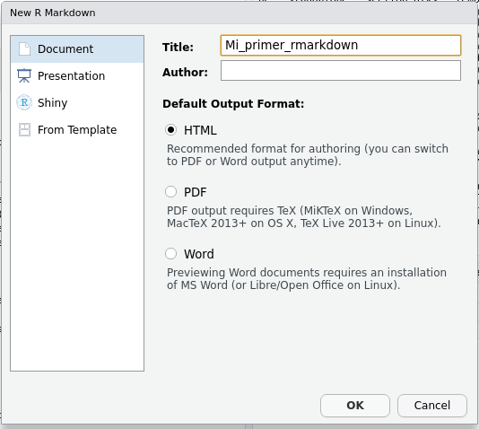

9.1 Eligiendo el formato de salida
Ya habrás visto esto cuando creás un archivo markdown nuevo, RStudio te permite elegir entre tres formatos de salida:

Cuál es el formato de salida de un archivo de R Markdown se determina principalmente con la opción output en el encabezado yaml. Si mirás el encabezado del archivo R Markdown de ejemplo vas a ver que la opción output dice html_document.

Ese html_document no es otra cosa que una función de {Rmarkdown} llamada html_document. Como te podrás imaginar, {Rmarkdown} tiene una serie de otras funciones que definen formatos de salida. Los dos que seguramente te van a servir más son pdf_document y word_document que justamente generan PDFs y archivos de Word, respectivamente.
Para crear un documento de R Markdown que genere un archivo PDF basta con cambiar el output en el encabezado por esto:
Para que el documento se genere correctamente hace falta instalar LaTeX, que es un sistema de composición de textos. Aunque parezca mentira, la mejor forma de instalar LaTeX para usar R Markdown es instalando el paquete {tinytex} con install.packages("tinytex") y luego correr tinytex::install_tinytex(). Esto va a instalar una versión pequeña de LaTeX en un lugar donde luego {Rmarkdown} lo puede usar. Esta es la forma altamente recomendada para generar PDFs con R Markdown que va a evitarte un montón de dolores de cabeza.
Análogamente, podés generar un archivo de word cambiando el output así:
Y ya está. En la gran mayoría de los casos no vas a tener que modificar nada más del código ni el texto.
Desafío
Agarrá el reporte que estuviste armando en los desafíos o alguno que usaste durante el curso y compilalo en PDF y luego en Word.